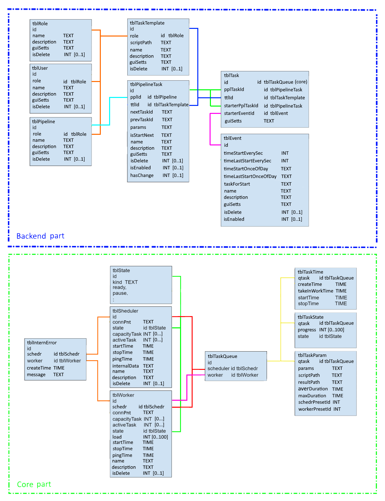

2 - Общее описание системы
2.1 - Функциональная схема системы

Очередь задач построена на базе СУБД PostgreSQL.
Шедулеры периодически опрашивают БД для получения новых задач (используется встроеный в БД механизм 'listen-notify').
У каждого шедулера свой пулл воркеров, при получении новой задачи выбирается свободный воркер.
Максимальное количество задач, которые может взять на себя воркер, задается при добавлении воркера в БД.
Воркер не имеет доступа к БД, все результаты выполнения задач в БД передает шедулер.
Шедулеры и воркеры создаются на страничке администратора в WEB интерфейсе пользователя
и могут быть запущены на любой машине в сети.
Web сервер построен на базе микро-фреймворка Flask.
Для каждого пользователя создается локальная БД SQLite для хранения состояния интерфейса.
Web клиент - приложение React, для управления состоянием используется Mobx, оформление Boostrap.
2.2 - Низкий уровень: шедулер, воркер, БД
Шедулер предназначен для:
- получения новых задач из БД
- передачи готовых к исполнению задач воркерам
- передачи результатов выполнения задач от воркеров в БД
Воркер предназначен для:
- непосредственного выполнения задачи - запуск дочернего процесса
- передача прогресса выполнения задачи шедулеру
- передача результата задачи шедулеру
БД (на базе PostgreSQL):
- хранит шаблоны задач (исходные скрипты заданные с пользовательского интерфейса)
- хранит текушую очередь задач и все выполненные ранее задачи
- хранит настройки для действующих шедулеров и воркеров
Схема БД
2.3 - Высокий уровень: вэб-сервер, клиент
Вэб-сервер написан на языке Python, построен на базе вэб-фреймфорка Flask.
Взаимодействие с низким уровнем системы происходит с помощью клиентской библиотеки и
соответствующей обертки на питоне.
Пользовательский интерфейс построен на базе js-фреймворка React.